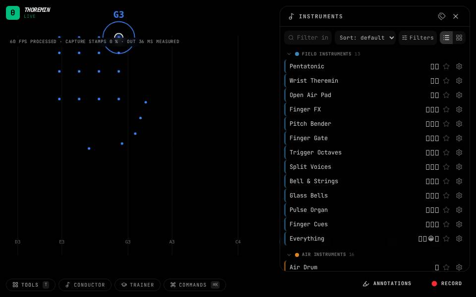

Thoremin

Thoremin turns your camera into a musical instrument. Hold a hand up and it plays; make a face and it plays chords; mime a drum, a bass, a guitar or a flute and it plays those; conduct an orchestra or dance to a song. It runs in your browser: nothing you play is uploaded.
Start in one minute
- Open the app in Chrome (other browsers work with a few gaps: see troubleshooting) and allow the camera.
- Tap anywhere to start the sound. Browsers need a tap before they will make any.
- Hold a hand up. Move it left and right for pitch, up and down for loudness. Raise a second hand for a second voice.
No camera? Add ?slot.source=synthetic-hands to the address and a pretend hand plays.
Pick something to try
- Field instruments: play the air like a theremin, with fingers, faces and open hands shaping the sound.
- Air instruments: strike a drum, pluck a bass, strum a guitar, blow a flute, at nothing.
- Chords and harmony: point at chords on a map or a wheel instead of notes.
- Sign instruments: fingerspell and see or hear the letters.
- Conduct and dance: the Conductor follows your beat; the Song follows your pulse.
- Teach it yourself: Your faces, Your hand shapes and Your poses learn the faces, shapes and poses you can make.
How the guide is arranged
Each page starts with what to do, in three lines. "How it works" and "Settings" are folded away until you want them. The instruments and the tools each have a page; the settings page explains every section of the instrument editor; and the manual lists every knob.
Instruments, sounds and saving
An instrument is a named saved set of every setting: scales, sounds, ranges, finger routing, what the face does, what is drawn on the video. A sound is just the timbre (a bell, a pad, a reed). Open the instrument list to browse them: star the ones you like, give them your own tags, and hover one for a short summary. Editing an instrument marks it changed; Save overwrites it and Save as new keeps both. Your working state survives a reload.